HT历次修改对比车库 · 多指标总览 原始PNG · 独立PDF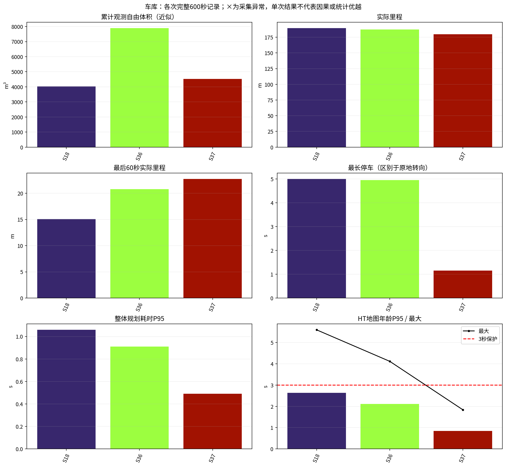
车库 · 累计体积与里程 原始PNG · 独立PDF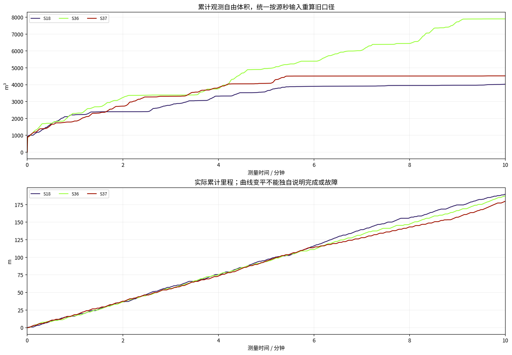
车库 · 每分钟新增观测 原始PNG · 独立PDF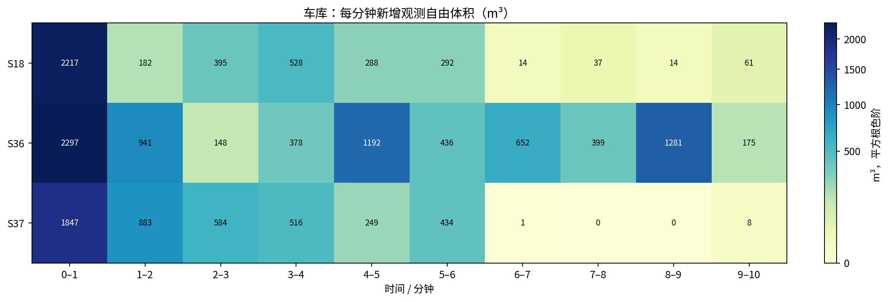
车库 · 停车、转向、倒车 原始PNG · 独立PDF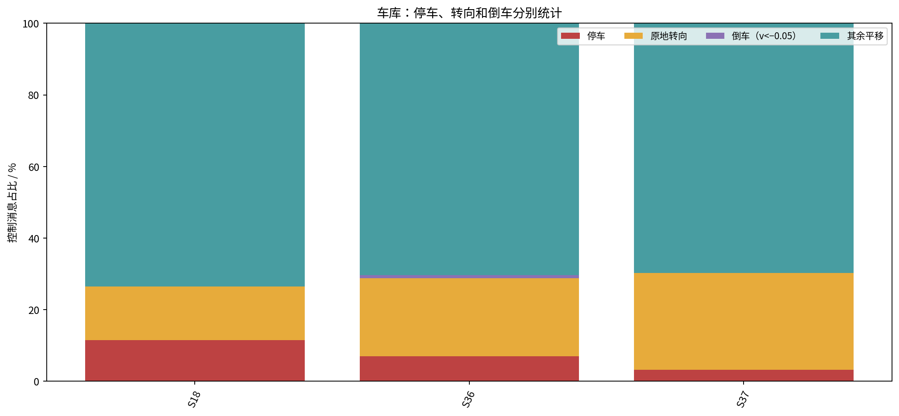
车库 · 规划与地图延迟分布 原始PNG · 独立PDF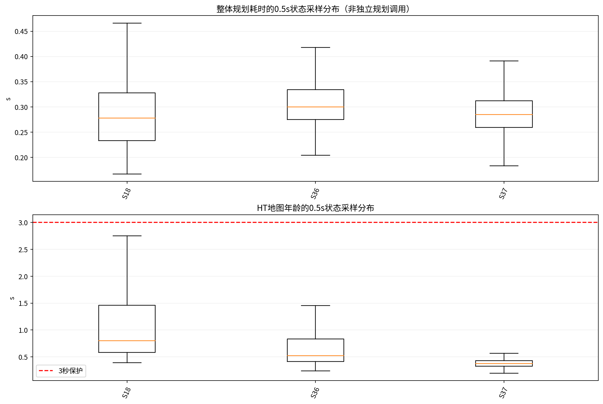
车库 · 统一空间尺度实际轨迹 原始PNG · 独立PDF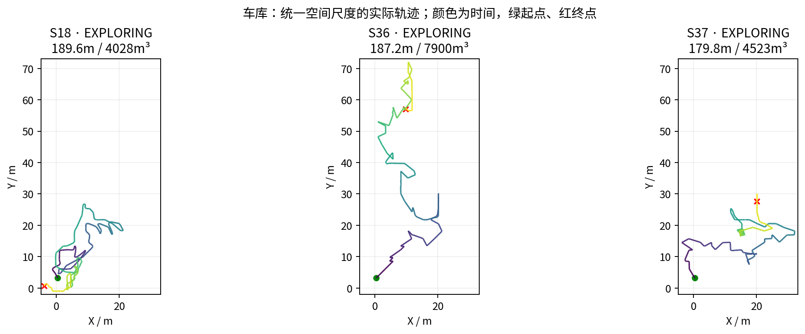
车库 · 探索、阻塞、返航、完成 原始PNG · 独立PDF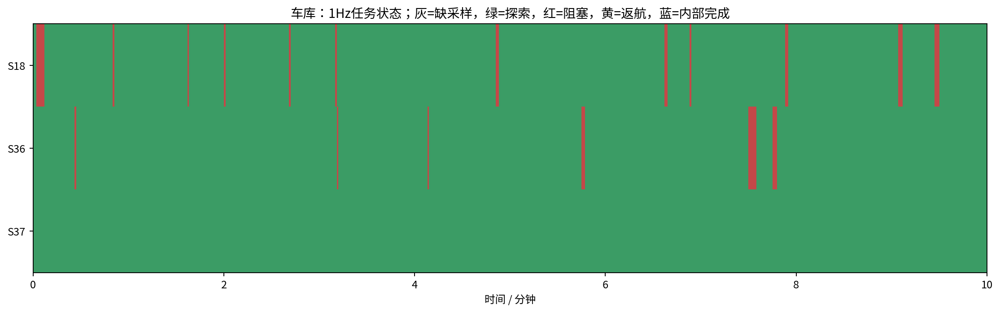
车库 · CPU与内存 原始PNG · 独立PDF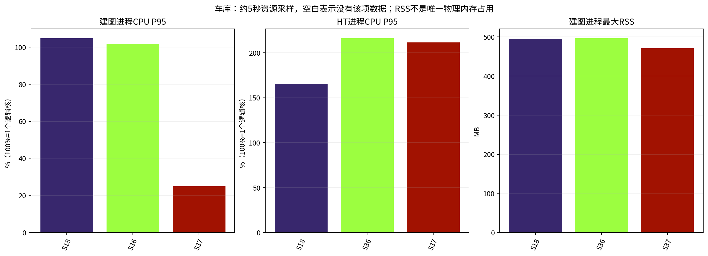
车库 · 有效增益与回访 原始PNG · 独立PDF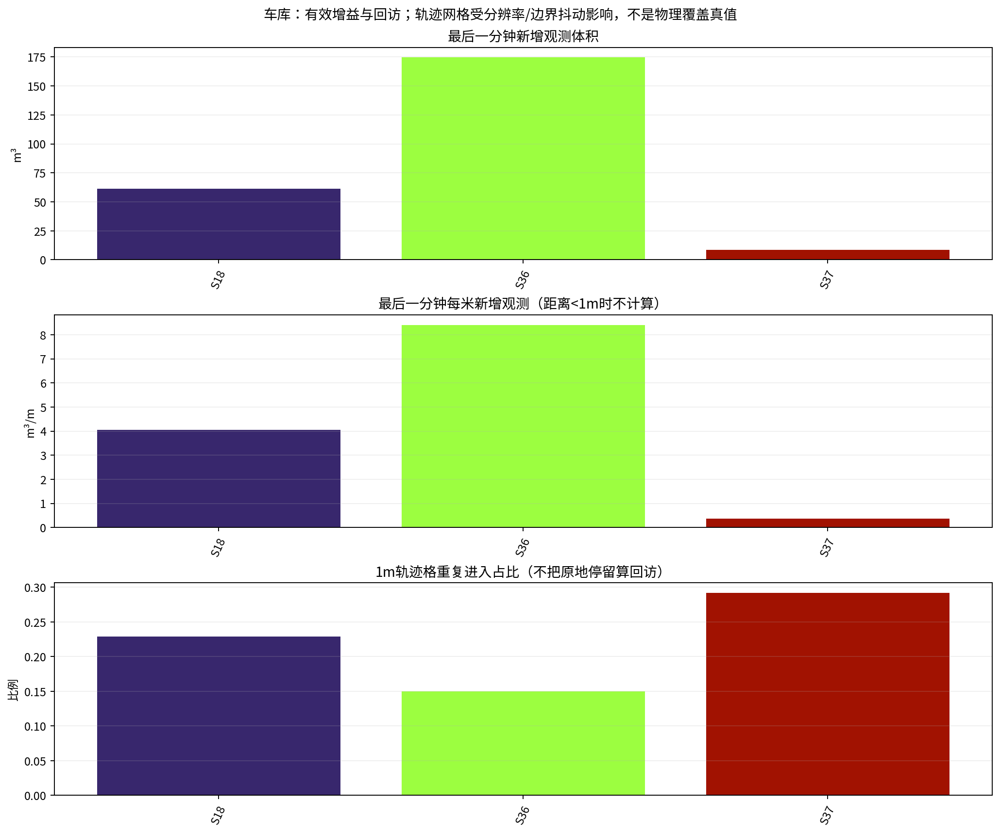
室内 · 多指标总览 原始PNG · 独立PDF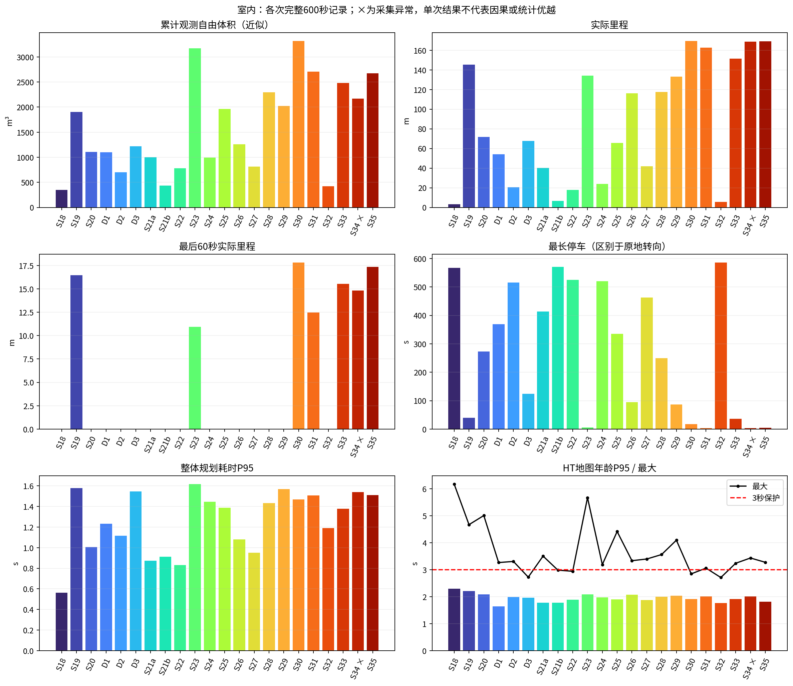
室内 · 累计体积与里程 原始PNG · 独立PDF 室内 · 每分钟新增观测 原始PNG · 独立PDF
室内 · 每分钟新增观测 原始PNG · 独立PDF 室内 · 停车、转向、倒车 原始PNG · 独立PDF
室内 · 停车、转向、倒车 原始PNG · 独立PDF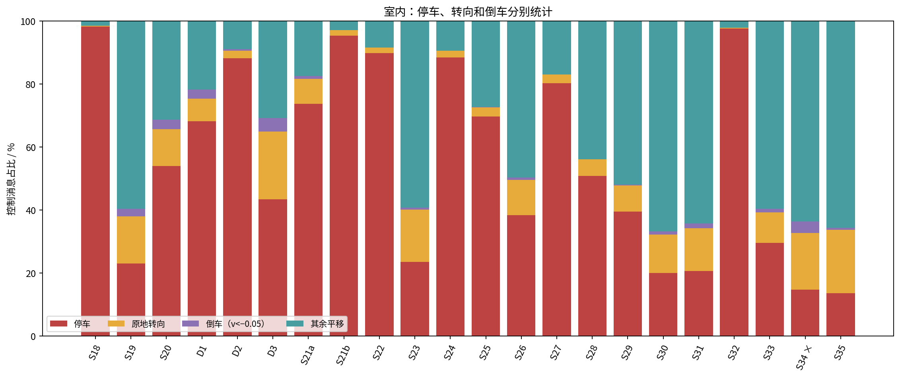
室内 · 规划与地图延迟分布 原始PNG · 独立PDF 室内 · 统一空间尺度实际轨迹 原始PNG · 独立PDF
室内 · 统一空间尺度实际轨迹 原始PNG · 独立PDF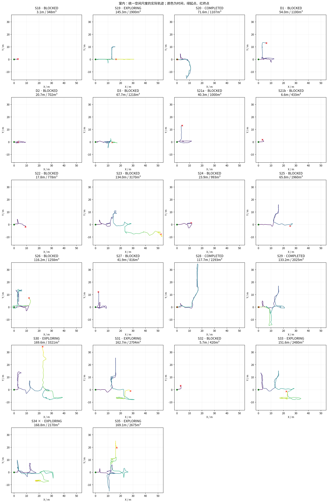
室内 · 探索、阻塞、返航、完成 原始PNG · 独立PDF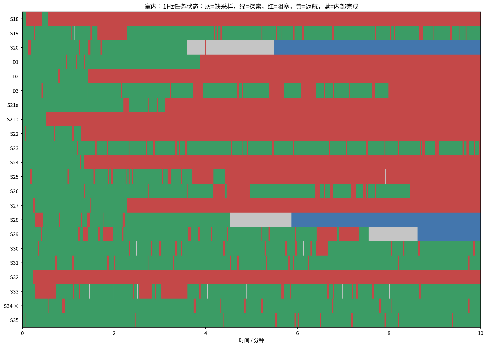
室内 · CPU与内存 原始PNG · 独立PDF 室内 · 有效增益与回访 原始PNG · 独立PDF
室内 · 有效增益与回访 原始PNG · 独立PDF 全部版本改动：01–12 原始PNG · 独立PDF
全部版本改动：01–12 原始PNG · 独立PDF 全部版本改动：13–24 原始PNG · 独立PDF
全部版本改动：13–24 原始PNG · 独立PDF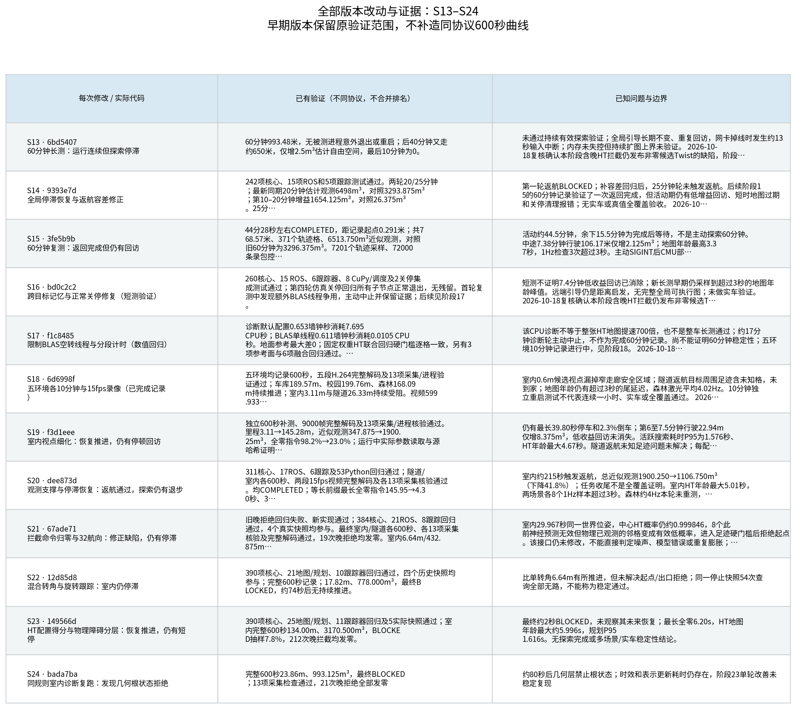
全部版本改动：25–36 原始PNG · 独立PDF 全部版本改动：37–37 原始PNG · 独立PDF
全部版本改动：37–37 原始PNG · 独立PDF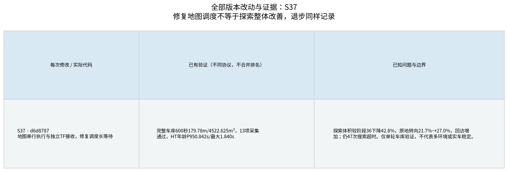